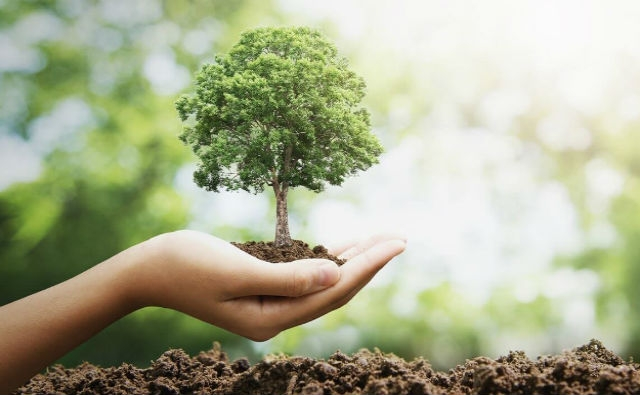
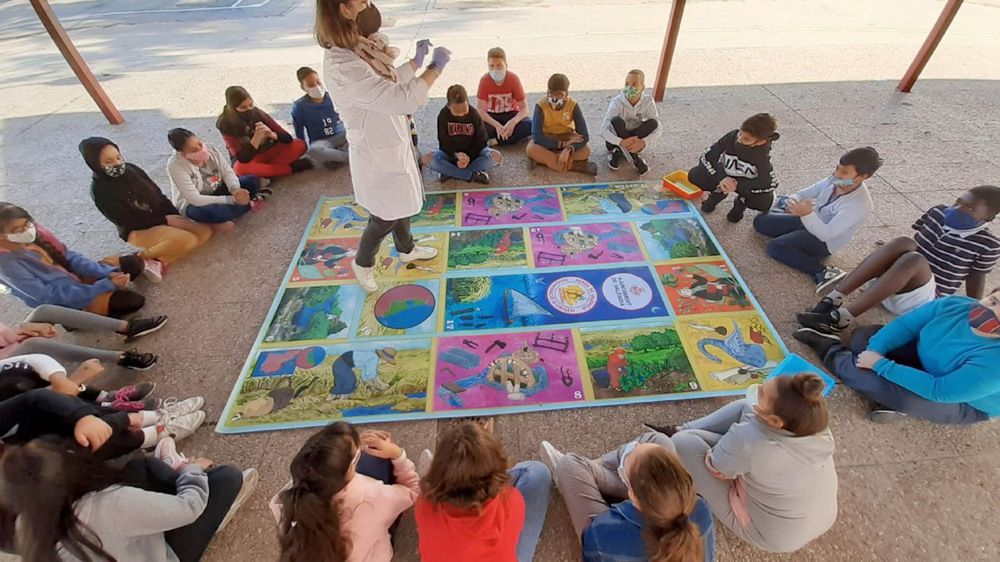
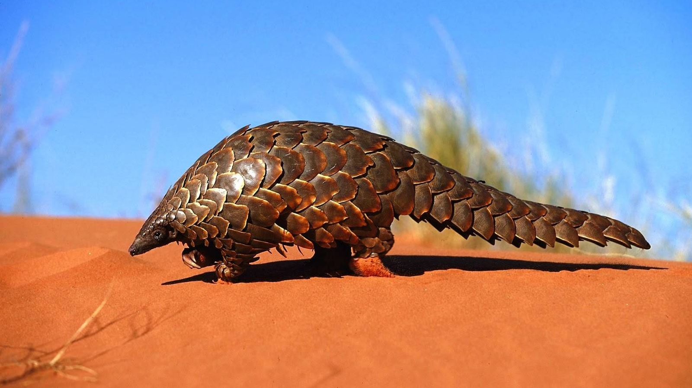
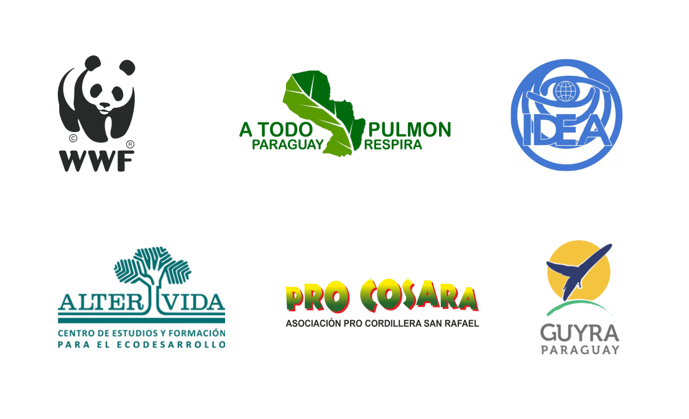
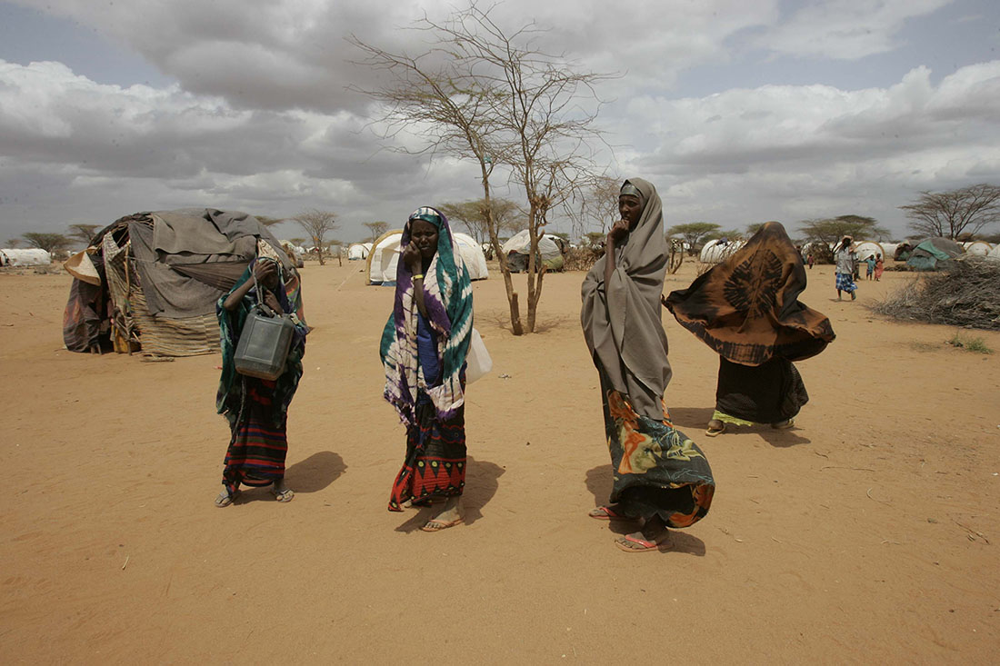

Introducción
¡Necesitamos tu colaboración! En Green Global Action estamos convencidos de que si todos aportamos algo, por muy poco que sea, podremos conseguir resultados visibles ante los problemas que nos ocupan. Si la gente sigue con esa actitud de pasotismo no vamos a avanzar, por lo tanto si colaboras con nuestra ONG te aseguramos que el 100% de tu aportación irá destinada a las siguientes causas:
Destinos

Plantar árboles

Recogida de residuos en el mar

Actividades educativas en centros escolares

Ayudar a animales en peligro de extinción
Invertir en investigaciones

Asociaciones

Ayudar a los refugiados medioambientales